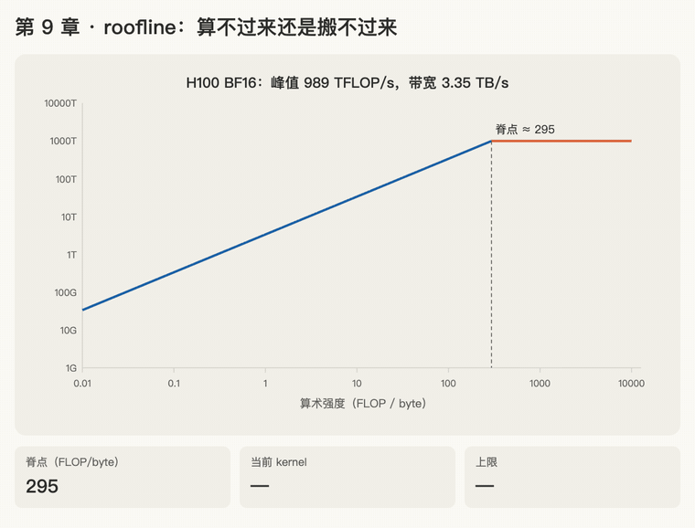

第 9 章 · 性能分析：roofline、正确计时与 Nsight
本地运行
git clone https://github.com/wikieden/cuda-to-tensor-core
cd cuda-to-tensor-core/code/notebooks
pip install jupyterlab torch numpy
jupyter lab ch09_roofline.ipynb也可以下载后直接用 VS Code 打开 .ipynb 运行。需要 GPU 的章节在 Colab 里选「代码执行程序 → 更改运行时类型 → GPU」。
本章回答：一个 kernel 是慢在"算"还是慢在"搬"？怎么用一条公式判断它最快能跑多快？怎么正确地测 kernel 时间？Nsight Systems 和 Nsight Compute 各看什么？
讲解日期：2026-11-14 · 上一章：第 8 章 occupancy · 下一章：第 10 章 归约
对应原文：Best Practices §9.1 Timing、§9.2 Bandwidth（materials/text/cuda-c-best-practices-guide.txt第 900–1084 行）；PG §2.5.3.3 Timing Operations in CUDA Streams（text/cuda-programming-guide.txt第 6483–6531 行）；Boehm SGEMM 开头的上限估算（text/blog-boehm-cuda-matmul-worklog.txt第 125–135 行）；GPU MODE L8（text/gpu-mode-lecture-08-cuda-performance-checklist.txt）；Nsight Compute guide（docs/nsight-compute-profiling-guide-v2026.3.1.txt）；04 调研 §4本章缩写：FLOP = FLoating-point OPeration（浮点运算，一次乘或加）· FLOP/s = 每秒浮点运算数 · TFLOP/s = 10¹² FLOP/s · AI = Arithmetic Intensity（算术强度，本章专指 FLOP ÷ 字节；不是人工智能）· SOL = Speed Of Light（光速，指硬件理论上限）· FMA = Fused Multiply-Add（融合乘加：a × b + c 一条指令，算 2 个 FLOP）
讲解
第一步：三种"慢"（2026-11-14）
Horace He 的三分法（〔旧知〕，04 调研 §2.3）：kernel 的时间花在三件事上——
| 类型 | 意思 | 典型例子 | 提速办法 |
|---|---|---|---|
| compute-bound | 计算单元一直满，数据来得够快 | 大矩阵乘法、prefill 阶段的 attention | 用 Tensor Core、低精度、减少多余运算 |
| memory-bound | 计算单元在等数据 | 逐元素运算、归约、LayerNorm、decode 阶段的 attention | 少搬数据：融合、合并访存、低精度存储 |
| overhead-bound | GPU 本身闲着，时间花在启动、Python、同步上 | 很多个几微秒的小 kernel | CUDA Graphs、融合、减少同步（第 26 章） |
先判断是哪一种，再选手段。 给 memory-bound 的 kernel 换 Tensor Core，一点用都没有。
第二步：roofline——一条公式算上限（2026-11-14）
算术强度 = 这个 kernel 做的浮点运算数 ÷ 它从显存读写的字节数（FLOP / byte）。
kernel 的最快速度受两个天花板限制：
两条线交点处的算术强度叫脊点（ridge point）：
- 算术强度 < 脊点 → memory-bound，性能 = 强度 × 带宽；
- 算术强度 > 脊点 → compute-bound，性能 = 峰值算力。
数字演示（H100 SXM，BF16 稠密 Tensor Core 约 989 TFLOP/s，HBM3 约 3.35 TB/s，规格书数字〔旧知〕）：
| kernel | FLOP | 字节 | 算术强度 | 判断 |
|---|---|---|---|---|
| 向量加法 FP32，n 个元素 | n | 12n（读 2 个、写 1 个，各 4 字节） | 0.083 | 极度 memory-bound |
| ReLU BF16 | n | 4n | 0.25 | memory-bound |
| 矩阵乘 FP32，N = 4096 | \(2N^3\) | 最少 \(3 \cdot 4N^2\) | \(N/6 \approx 683\) | compute-bound |
| 矩阵乘 BF16，N = 4096 | \(2N^3\) | 最少 \(3 \cdot 2N^2\) | \(N/3 \approx 1365\) | compute-bound |
向量加法的上限：0.083 × 3.35 TB/s ≈ 0.28 TFLOP/s——不到峰值的 0.03%。这不是 kernel 写得差，是这个运算本身就只能这么快；评价它要看带宽利用率（达到 3.35 TB/s 的百分之几），而不是 FLOP/s。
Boehm 的 SGEMM 博客一开头就做了这笔账（第 129–132 行）：A6000 FP32 30 TFLOP/s、768 GB/s；4092² 的矩阵乘理论上算要 4.5 ms、搬最少的数据只要 0.34 ms——所以写对了一定是 compute-bound。
第三步：正确计时（2026-11-14）
Best Practices §9.1 和 04 调研 §4.2 合起来的清单：
- 用 CUDA event 计时（GPU 时钟，分辨率约 0.5 微秒）：
cpp
cudaEventRecord(start);
kernel<<<g, b>>>(...);
cudaEventRecord(stop);
cudaEventSynchronize(stop);
cudaEventElapsedTime(&ms, start, stop);
用 CPU 计时器就必须在开始和结束前都 cudaDeviceSynchronize()（第 4 章题 2）。
2. 先预热：第一次调用含加载、JIT 编译等一次性开销，不算。
3. 重复多次取中位数：单次波动大。
4. 小输入要清 L2：输入只有几 MB 时，第二次跑全在 L2 里（H100 有 50 MB），测出来的"显存带宽"比真实显存还快。每次之间写一块比 L2 大的缓冲区冲掉它。
5. 知道频率会变：GPU 会因功耗、温度降频（Gordić 第 81–96 行）。Nsight Compute 默认锁定基础频率，所以它测的时间和实际跑的时间可能对不上。
6. 报告有效带宽或 TFLOP/s，并和峰值比：
$\(\text{有效带宽} = \frac{\text{读字节} + \text{写字节}}{\text{耗时}}\)$
（Best Practices §9.2.2）。
第四步：Nsight 两件套（2026-11-14）
| 工具 | 看什么 | 什么时候用 |
|---|---|---|
Nsight Systems（nsys profile ./app） |
整个程序的时间线：CPU 线程、每个 kernel、每次拷贝、kernel 之间的空隙 | 先用它：找出哪个 kernel 最耗时、GPU 有没有在闲着等 CPU |
Nsight Compute（ncu --set full ./app） |
单个 kernel 的深度报告 | 锁定了慢 kernel 之后 |
Nsight Compute 报告先看这几块（04 调研 §4.1）：
- GPU Speed Of Light Throughput：Memory % 和 Compute (SM) % 两个数。哪个接近 100% 就是被它卡住；两个都低，多半是延迟没藏住（occupancy 低、依赖链长）或 overhead。
- Roofline 图：直接把 kernel 画成一个点，看离屋顶多远。
- Memory Workload Analysis：每一层（L1 / L2 / 显存）的流量和命中率；合并访存不好时，"sectors / request"会偏大（理想是 4，第 6 章）。
- Warp State Statistics：warp 都在等什么。
Stall Long Scoreboard= 等显存；Stall MIO Throttle/Short Scoreboard= shared memory 压力；Stall Barrier= 等__syncthreads()。 - Occupancy：理论值、实测值、卡在哪道门槛（第 8 章）。
- Source 页：把耗时对应到每一行源码和 SASS。
Mac 上没有 NVIDIA GPU，这些工具都要到云 GPU 上用；本地只能读报告（GPU MODE L8 有一次完整演示的字幕）。
动画演示：roofline

可交互版：animations/09-roofline.html。开关：GPU（H100 BF16 / A6000 FP32）。
怎么看：
- 横轴是算术强度（对数），纵轴是可达性能（对数）；斜线是带宽限制，水平线是算力限制，拐点是脊点；
- 播放时依次把向量加法、ReLU、softmax、FP32 GEMM、BF16 GEMM 放到图上；
- 每个点下方写着它是 memory-bound 还是 compute-bound、上限是多少；
- 换成 A6000 FP32，看脊点从 295 降到 39，GEMM 和 softmax 的位置关系怎么变。
练习与作答记录
题 1：LayerNorm 前向（BF16 输入输出，FP32 计算），每个元素读 1 次、写 1 次，大约做 8 次浮点运算。算术强度是多少？在 H100 上它是哪种 bound？上限是多少 TFLOP/s？评价这个 kernel 应该看什么指标？
作答：（待作答）
题 2：你测一个 kernel：输入 4 MB，循环跑 100 次取平均，算出有效带宽 5 TB/s，比 H100 的显存带宽还高。可能哪里出了问题？
作答：（待作答）
题 3：Nsight Compute 报告显示 Memory 18%、Compute 22%，Warp State 里最多的是 Stall Long Scoreboard，occupancy 只有 12%。你的判断是什么？下一步试什么？
作答：（待作答）
口诀
先分三类：算不过来、搬不过来、GPU 在闲着；
算术强度 = FLOP ÷ 字节，脊点 = 算力 ÷ 带宽；低于脊点看带宽，高于脊点看算力；
计时用 event，先预热，取中位数，小输入清 L2；
先 nsys 看全局，再 ncu 看单个：SOL 两个数，warp 在等什么。
本章复习卡片
- C20（roofline：性能 = min(峰值算力, 强度 × 带宽)；脊点；H100 BF16 约 295 FLOP/byte）
- C21（正确计时五条：event / 预热 / 中位数 / 清 L2 / 频率）
- C22（Nsight 两件套分工；ncu 先看 SOL、warp stall 原因）
附录 · 延伸阅读
留给以后深入学习用，不影响本章主线。★ 是建议先读的。
推荐阅读
| 读什么 | 读哪里 | 读它为了什么 |
|---|---|---|
| ★ Best Practices §9 | text/cuda-c-best-practices-guide.txt 第 900–1084 行 |
CPU / GPU 计时器、理论带宽与有效带宽 |
| ★ Horace He「Making Deep Learning Go Brrrr From First Principles」 | 在线 horace.io/brrr_intro.html（〔旧知〕） | compute / memory / overhead 三分法 |
| ★ GPU MODE L8 Performance Checklist | text/gpu-mode-lecture-08-cuda-performance-checklist.txt |
带 ncu 实操的性能清单 |
| Nsight Compute guide | docs/nsight-compute-profiling-guide-v2026.3.1.txt 的 Sections / Roofline / Warp Stall 部分 |
每个指标的定义 |
| Oxford「Nsight」「performance debugging」讲义 | text/oxford-Nsight.txt、text/oxford-NVIDIA_performance_debugging.txt |
NVIDIA 工程师讲的排查流程 |
| How to Scale Your Model 第 12 章 | 在线 jax-ml.github.io/scaling-book/gpus | H100 / B200 / GB200 的 roofline 推导 |
| Williams, Waterman, Patterson「Roofline」（CACM 2009） | 在线（〔旧知〕） | roofline 模型的原始论文 |
数学原理
- roofline：\(P = \min(P_{\text{peak}}, I \cdot B)\)，\(I\) 为算术强度，\(B\) 为带宽；脊点 \(I^* = P_{\text{peak}}/B\)。
- 矩阵乘的算术强度：\(M \times K\) 乘 \(K \times N\)，FLOP \(= 2MNK\)，最少字节 \(= s(MK + KN + MN)\)（\(s\) 为每元素字节数）。方阵 \(N\)：\(I = 2N^3 / (3sN^2) = 2N/(3s)\)，随 \(N\) 线性增长——所以大矩阵乘一定 compute-bound，小矩阵乘（如 decode 时 batch = 1 的矩阵向量乘，强度约为 1 量级）一定 memory-bound。
- 有效带宽：\(B_{\text{eff}} = (B_r + B_w)/t\)。
公式 / 代码清单
| 名称 | 公式 / 代码 |
|---|---|
| 算术强度 | FLOP ÷ (读 + 写字节) |
| 可达性能 | min(peak_flops, intensity * bandwidth) |
| event 计时 | cudaEventRecord / cudaEventSynchronize / cudaEventElapsedTime |
| 全局时间线 | nsys profile -o out ./app |
| 单 kernel 报告 | ncu --set full -k <kernel名> -o rep ./app |
| Python 里计时 | triton.testing.do_bench(fn)（自动预热、清 L2、取分位数） |
代码对照：把本章的数字用代码算一遍
用 NumPy 在 CPU 上模拟同样的规则。代码在仓库本地
cuda-programming/solutions/chapter-code/ch09_roofline.py，配套测试tests/test_ch07_12.py；同一章的 notebook：notebooks/ch09_roofline.ipynb（讲解和代码放在一起，一格一格边读边跑）。在线版不带代码文件，下面摘了关键几行。Mac 上直接能跑，不需要 GPU（Nsight Systems / Nsight Compute 要 NVIDIA GPU [GPU]；计时规范用 NumPy 在 CPU 上演示）：
bash cd cuda-programming/solutions/chapter-code uv run python ch09_roofline.py # 一步一步打印 uv run pytest tests/test_ch07_12.py
讲义 ↔ 代码：
| 讲义 | 公式 / 说法 | 写法 | 跑出来 |
|---|---|---|---|
| 第二步 脊点 | 989 / 3.35 | ridge(**H100_BF16) |
295 FLOP/byte |
| 第二步 四个 kernel | FLOP ÷ 字节 | intensity_vec_add_fp32() 等 + bound(...) |
0.083、0.25 → memory；683、1365 → compute |
| 第二步 向量加法上限 | 强度 × 带宽 | attainable(1/12, **H100_BF16) |
0.28 TFLOP/s，峰值的 0.028% |
| 第二步 Boehm 的账 | 137 GFLOP ÷ 30 T；268 MB ÷ 768 G | boehm_lower_bounds() |
4.57 ms、0.35 ms（Boehm 写 4.5、0.34） |
| 第三步 计时 | 预热 + 中位数 + 有效带宽 | time_it(fn)、effective_bandwidth(8n, 4n, t) |
因机器而异 |
关键几行：
def attainable(intensity, peak, bw): # roofline 一条公式
return min(peak, intensity * bw)
ridge = peak / bw # 脊点
for _ in range(warmup): fn() # 先预热
ts = [timed(fn) for _ in range(repeat)] # 重复多次
t = np.median(ts) # 取中位数
bw_eff = (read_bytes + write_bytes) / t # 有效带宽
代码里才看得到的 3 件事：
- Boehm 的 4.5 ms、0.34 ms 是截断的：代码算出 4.57 ms 和 0.349 ms，测试按 ±0.1 / ±0.01 的容差核对。268 MB 里包括读 C（因为公式有 β·C）和写 C，一共 4 × 4092² × 4 字节。
- CPU 上的
time.perf_counter不需要同步：NumPy 的加法是同步执行的。GPU 上要换成 CUDA event，或者计时前后都cudaDeviceSynchronize()（第 4 章）。 - CPU 算出的"有效带宽"会受缓存影响：数组小到能放进 CPU 缓存时，测出来比内存带宽高——和讲义说的"小输入要清 L2"是同一个坑。
自己改一改（不影响练习答案）：
- 把
n = 4_000_000改成 4_000 和 40_000_000，看测出来的"有效带宽"怎么变（小数组全在缓存里）。 - 用
attainable把 A6000 FP32 的 roofline 画几个点：强度 1、10、39、100。